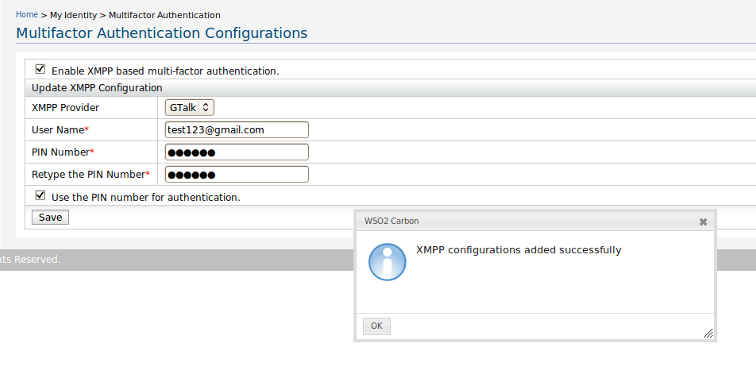

Multifactor Authentication Configurations

Figure 1:Configuring XMPP Settings.
- To enable XMPP based Multi-Factor Authentication, select the checkbox, Enable XMPP based multi-factor
authentication.
Then other required fields will be enabled. XMPP based multi-factor authentication will be activated only if this
checkbox is checked.
- Select the preffered XMPP Provider from the combo box.
- Specify the username corresponding to the XMPP Provider mentioned above. Note that the username
along with the provider's extension should be specified here. Ex : wso2ISuser@xmpp-provider.com
- Enter a PIN number which contains more than six characters.
- Re-Enter the same PIN number.
- The checkbox, Use the PIN number for authentication is used to specify whether the PIN number
should be used in the authentication process. If this is checked, then the PIN number should be provided in the
authentication process, else yes/no type of response is expected in the Multi-Factor authentication process.
- Finally click the Add button. Then a notification will be popped up saying the status of the
operation. After the successful completion of this process, you will be ended up with a notification similar to the
following.

- Once these settings are added, it is possible to modify the settings whenever required. Do the necessary changes and click Save
button.